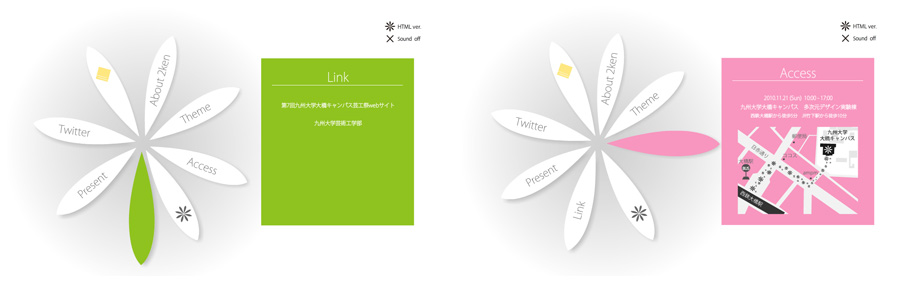
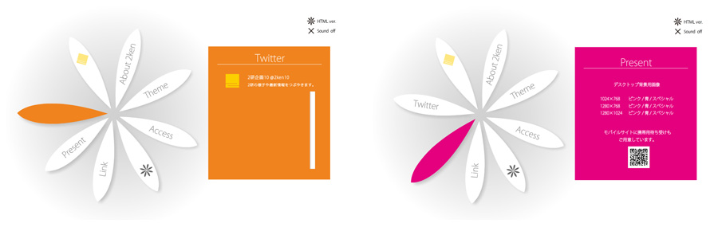

Project of 2ken10 「花をそえよう。」 特設Webサイト
大学の学園祭でインスタレーション（空間構成）イベントを行うサークル「2研企画」の、
2010年度の企画「花をそえよう。」の特設Webサイトです。
- 制作期間
- 2010年9月下旬〜10月上旬
- 使用ツール
- Illustrator / Flash / Dreamweaver
- 目的
- とにかくイベントに興味を持ってもらう
- 備考
- 3名でのグループ制作
担当：企画 / Flash作成（Loading除く）


大学の学園祭でインスタレーション（空間構成）イベントを行うサークル「2研企画」の、
2010年度の企画「花をそえよう。」の特設Webサイトです。